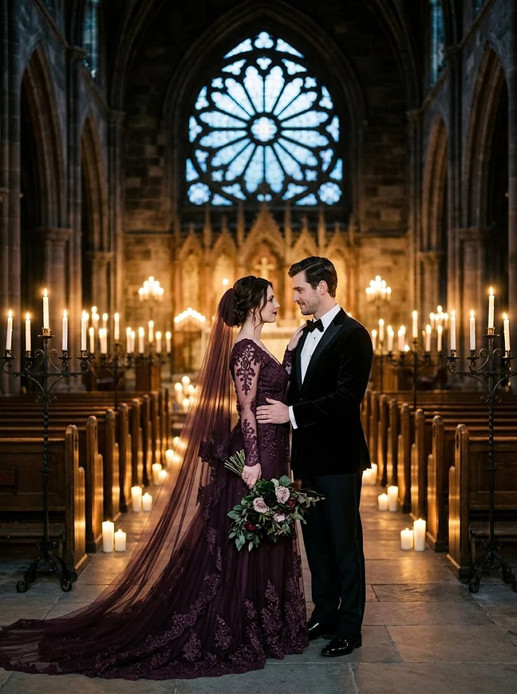
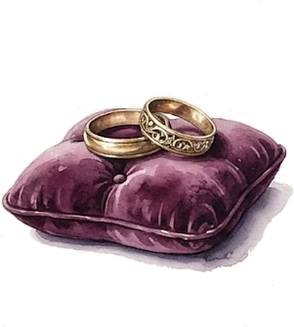
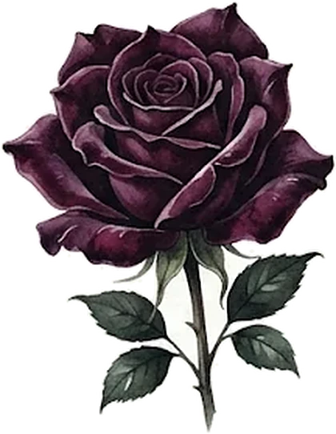
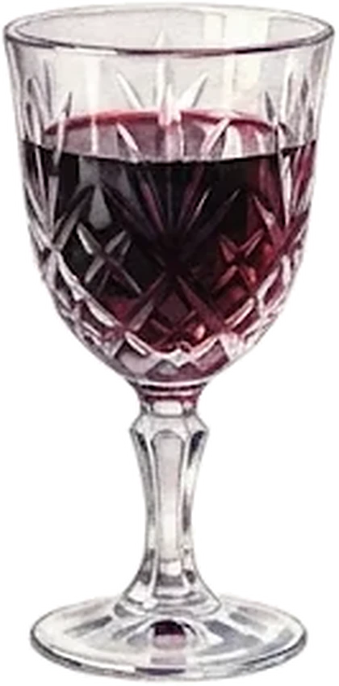
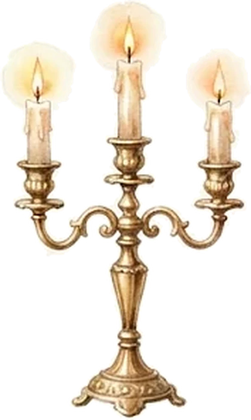
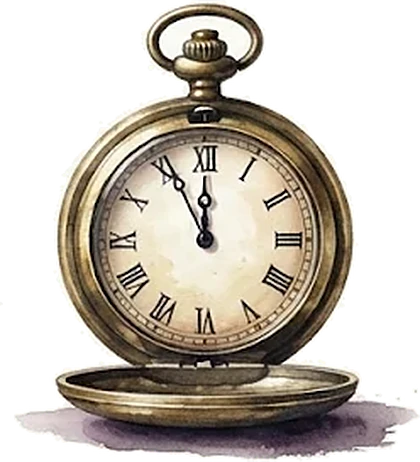
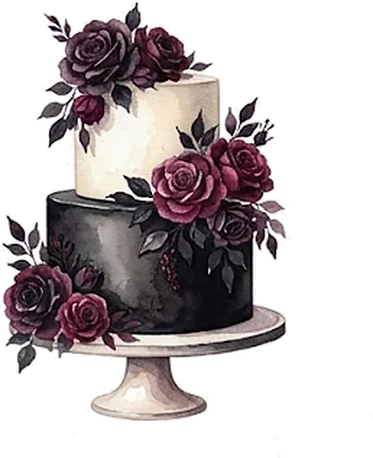
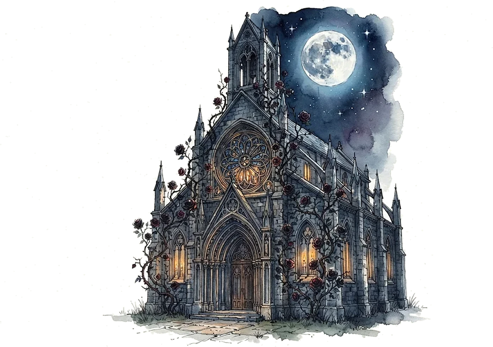
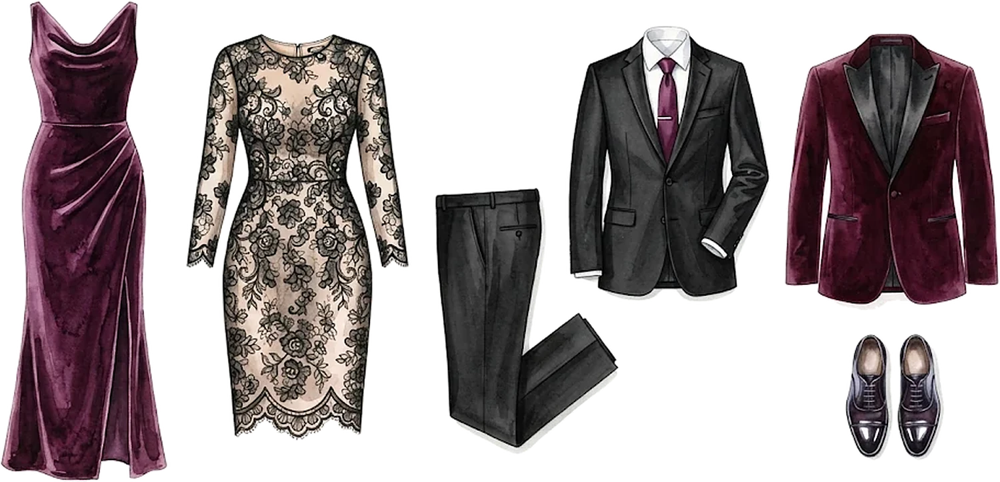
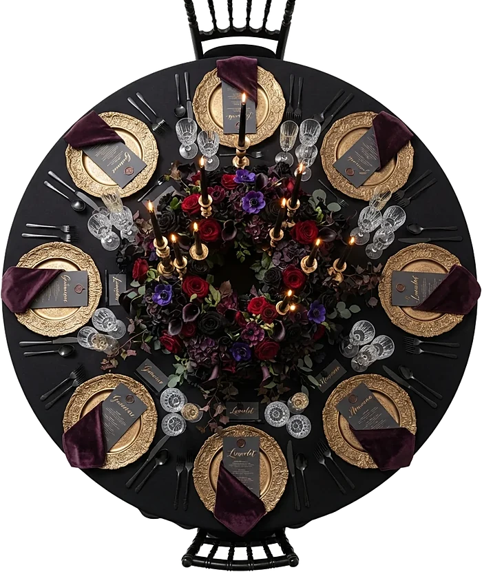

Notre histoire
Ils se sont rencontrés un soir d'automne, à la sortie d'un concert d'orgue. Des années de romans du XIXe siècle partagés, de musées à la tombée du jour et de dîners aux chandelles : leur mariage ne pouvait qu'avoir lieu la nuit.

Le programme
Samedi 30 octobre 2027

18 h 00Échange des alliances dans la chapelle aux chandelles
18 h 30Sortie sous une pluie de pétales sombres
19 h 00Cocktail au clair de lune
20 h 30Dîner sous les arches
23 h 00Ouverture du bal à minuit moins une
00 h 00Gâteau des mariés à minuit
Le lieu

Chapelle Saint-Éloi
Rouen
Hébergement
Tenue
Tenue de soirée
Noir, prune et bordeaux de rigueur : velours, dentelle, costumes sombres. Une touche gothique est la bienvenue pour celles et ceux qui le souhaitent, sans aucun costume obligatoire.

Le compte à rebours
Votre place

Le jour venu, trouvez votre table en un instant.
Voir le plan de tableListe et cagnotte
Votre présence est notre plus beau cadeau. Pour ceux qui le souhaitent :
Participer à la cagnotte- Service à thé80 €
- Linge de maison120 €
- Week-end en amoureux250 €Déjà offert
Réservez le cadeau que vous offrez : les autres invités le voient pris. La cagnotte et les boutiques sont celles des mariés ; Maison Vivat ne touche jamais l'argent.
Votre réponse
Merci de répondre avant le 15 septembre 2027.